Jogos em Andamento
Jogos que eu estou zerando no momento:
-
Hades
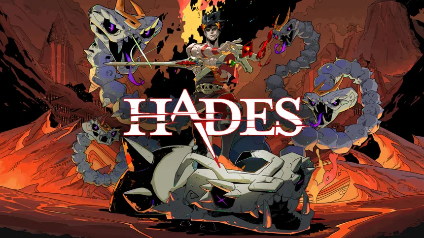
Hades é um jogo roguelike inspirado na mitologia grega em que o jogador controla Zagreus, filho de Hades, em sua tentativa de escapar do submundo. Cada tentativa de fuga é diferente porque as fases, inimigos e poderes recebidos mudam a cada partida. Mesmo quando o jogador falha, o progresso continua através de melhorias, novos diálogos e desenvolvimento dos personagens.
Acesse a página do jogo na Steam aqui!
-
Resident Evil 2 Remake
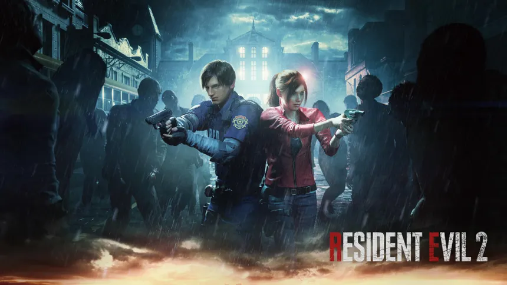
Resident Evil 2 Remake acompanha Leon Kennedy e Claire Redfield tentando sobreviver ao caos em Raccoon City após um vírus transformar a população em monstros. A proposta do jogo é criar uma experiência intensa de sobrevivência, combinando exploração, escassez de recursos, puzzles e combate tenso.
Acesse a página do jogo na Steam aqui!
-
Detroit Become Human
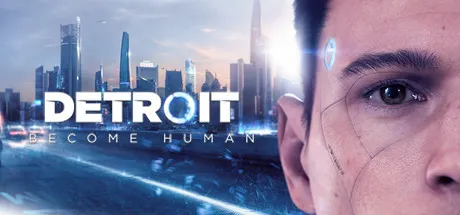
Detroit: Become Human é um jogo narrativo que se passa em um futuro onde androides convivem com humanos como trabalhadores e assistentes. A história acompanha três androides (Connor, Kara e Markus) que começam a desenvolver consciência própria e questionar sua existência.
Acesse a página do jogo na Steam aqui!
-
Resident Evil: Village
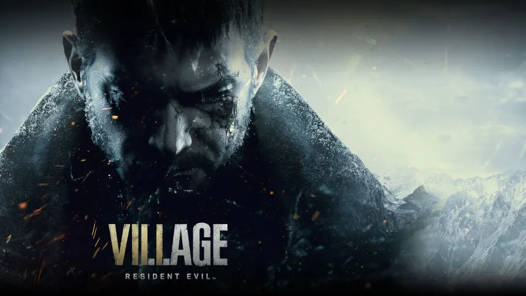
Resident Evil Village é um jogo que mistura terror, ação e exploração em uma vila isolada dominada por criaturas sobrenaturais. A história acompanha Ethan Winters em sua busca pela filha desaparecida, enfrentando figuras como Lady Dimitrescu e outros líderes misteriosos da região.
Acesse a página do jogo na Steam aqui!
Jogos Constantes
Jogos que jogo diariamente:
-
Stardew Valley
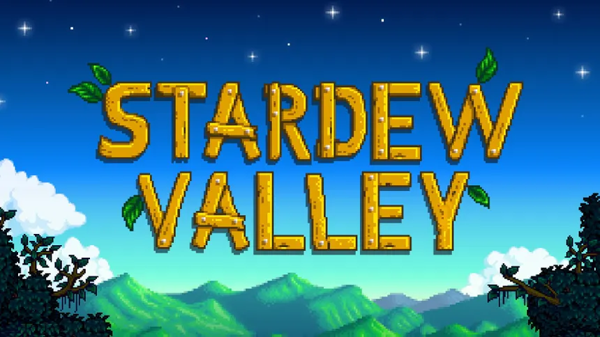
Stardew Valley é um jogo de simulação onde o jogador herda uma fazenda antiga e começa uma nova vida no campo. No jogo, é possível cultivar plantações, cuidar de animais, pescar, minerar, cozinhar e criar relações com os moradores da cidade.
Acesse a página do jogo na Steam aqui!
-
Fragpunk
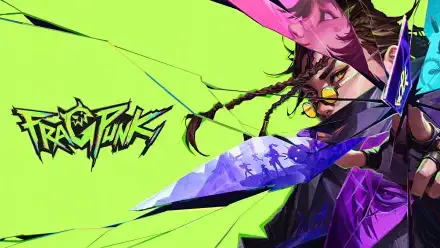
FragPunk é um jogo de tiro competitivo em equipe. O jogo utiliza cartas especiais que alteram as regras do combate, mudando habilidades, física, armas e até condições do mapa, para diversificar a experiência dos jogadores. O jogo combina ação rápida no estilo hero shooter com estratégia, incentivando adaptação constante e criatividade dos jogadores.
Acesse a página do jogo na Steam aqui!
-
Reverse: 1999
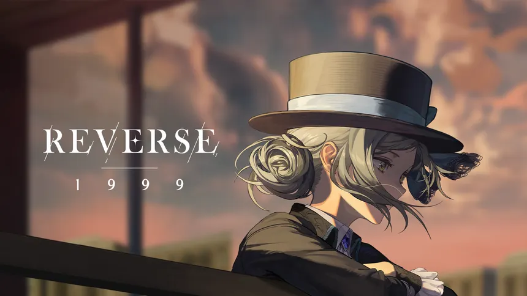
Reverse: 1999 é um RPG com temática de viagem no tempo. A história se passa em um mundo afetado por um fenômeno misterioso chamado “Storm”, que faz o tempo retroceder e apaga épocas inteiras da existência. O jogador controla Vertin, uma personagem imune ao fenômeno que viaja entre diferentes períodos históricos reunindo aliados para investigar a origem desse colapso temporal. O jogo alterna entre momentos de narrativa e combate estratégico em turnos.
Acesse a página do jogo na Steam aqui!
Jogos Futuros
Jogos que pretendo jogar futuramente (em ordem de prioridade):
-
Resident Evil 4 Remake
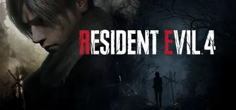
Resident Evil 4 Remake acompanha Leon Kennedy em uma missão para resgatar a filha do presidente dos Estados Unidos em uma vila isolada da Europa. O jogo mistura ação, exploração e terror de sobrevivência, trazendo combates intensos, gerenciamento de recursos e inimigos infectados por um parasita misterioso.
Acesse a página do jogo na Steam aqui!
-
Clair Obscur: Expedition 33
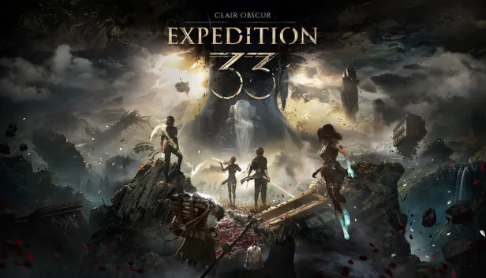
Clair Obscur: Expedition 33 é um RPG com combate em turnos e elementos de ação em tempo real. A história acompanha um grupo de aventureiros tentando impedir uma entidade conhecida como Paintress, responsável por apagar pessoas da existência todos os anos. O jogo combina exploração, batalhas estratégicas e uma narrativa focada nos personagens e no destino do mundo.
Acesse a página do jogo na Steam aqui!
-
Hollow Knight
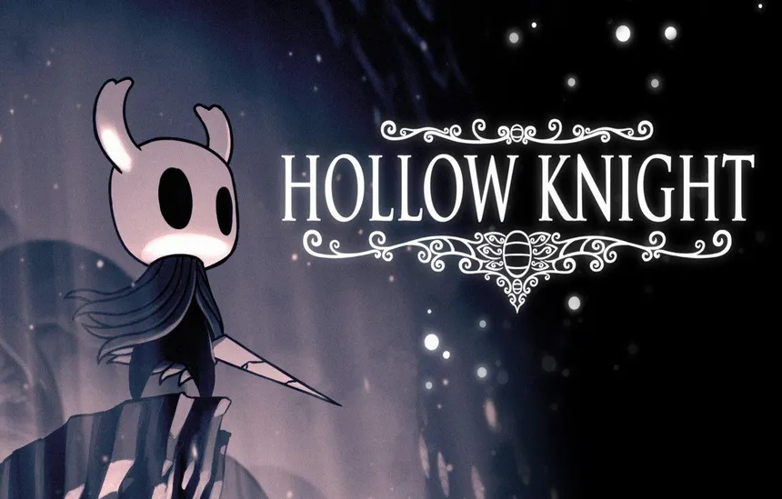
Hollow Knight é um jogo de ação e exploração em estilo metroidvania ambientado no reino subterrâneo de Hallownest. O jogador controla um pequeno cavaleiro que enfrenta criaturas corrompidas, descobre segredos antigos e desbloqueia novas habilidades para acessar diferentes áreas do mapa.
Acesse a página do jogo na Steam aqui!
-
Hades II
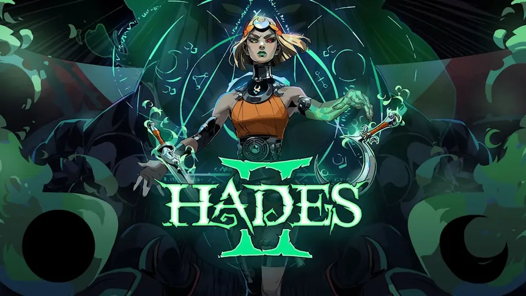
Hades II é a sequência do roguelike inspirado na mitologia grega Hades. Desta vez, o jogador controla Melinoë, princesa do submundo e irmã de Zagreus, em sua jornada para enfrentar Chronos, o Titã do Tempo. O jogo mantém a estrutura de tentativas repetidas com poderes aleatórios, mas adiciona novas armas, habilidades mágicas e personagens mitológicos.
Acesse a página do jogo na Steam aqui!